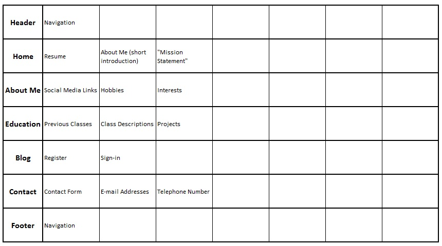
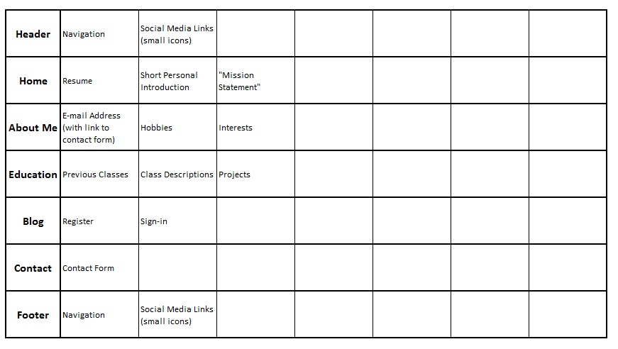
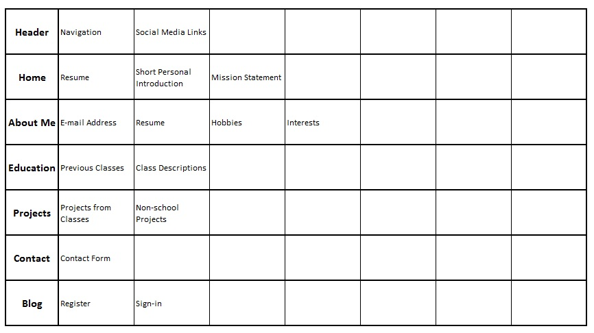
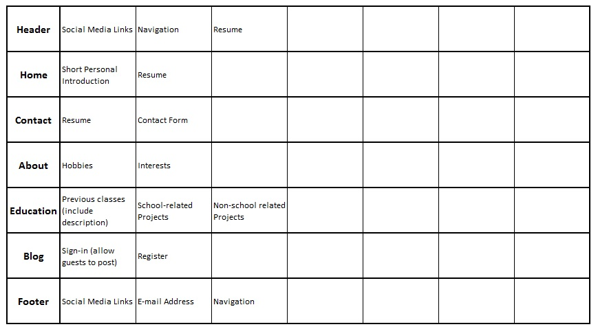

Initial Cards
My current idea for the final project website is to create a site about myself that I could possibly eventually put on my resume for potential employers to view. It would contain things like information about myself, any relevant classes that I've taken, any projects worth mentioning from those classes, my resume, and a contact page. It would be useful for the page to contain a short description of each relevant class as well, so that employers would have a better idea of what experience I gained from school before an interview, and the projects would further allow them to see the quality of my work. Basing the content on this idea, here are the cards that I've developed for content on the final project website:
- Home
- About Me
- Education
- Previous Classes
- Class Descriptions
- Projects
- Resume
- Contact
- Contact Form
- E-mail Address
- Telephone Number
- Social Media Links (Facebook / Twitter / LinkedIn)
- Blog
- Register
- Sign-in
- Hobbies
- Interests
- Header
- Footer
- Navigation
- Short Personal Introduction
- "Mission Statement"
Results: My Sort
The results from the sort that I performed are shown below:
Results: Participant #1
The results from the sort that participant #1 completed are shown below.
Results: Participant #2
The results from participant #2's sort are shown below.
Results: Participant #3
The results from the third sort done by participant #3 are shown below.
Results: Summary
The process that I used to conduct these sorts was pretty straightforward and simple. I started by finding three of my friends, and explained to them the general premise of the assignment -- card sorting and our personal website project. From there, I gave a very general description of what I was intending to do for my final project website. I tried not to give too many details of what I was had in mind, as I didn't want to skew the results. I then gave each participant the cards, and had them lay them out. The results are shown above.
The findings of these sorts were all similar, but I wasn't surprised because the site itself is intended to be very simple. All participants had the same general major categories, with the exception being participant #2 who removed the footer and added a category for 'Projects'. While I don't completely agree with that, this participant also gave the idea of splitting 'Projects' up into two sub-elements, one for school-related projects and one for non-school projects. I like this idea because I think giving information about work outside of school would show ambition. Aside from that, the only other differences were what elements were placed in which of the major categories. Some participants included a link to Resume in places other than just the Home Page. One participant suggested adding this link to Navigation, rather than create it's own element.
Lastly, the sorts differ slightly from my current architecture. Some of the major categories found in the sorts are already implemented on the current site, though the actual content differs from what will be included in the final project. First, the information on classes/education only talks about classes that I'm taking this year, and does not provide an on-page description (they link to the actual class webpages). Second, I haven't yet developed a contact form. I imagine I'll use PHP to complete that task, which shouldn't take all that long to code. I don't have a blog -- I'm still debating on whether or not to include this element in the final project, or find something to replace it with. Lastly, I haven't included a copy of my resume on the page yet, mostly because I've been working on updating it over the last few weeks.